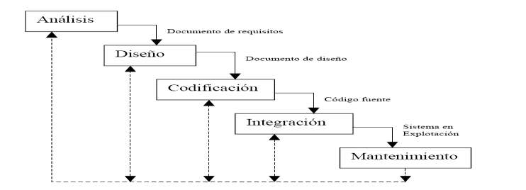

El ciclo de vida de los Sistemas de información. Modelos de Ciclo de Vida.
Definicion
Teniendo en cuenta el estándar ISO-12207 (estándar para los procesos del ciclo de vida del software). El ciclo de vida indica:
- Procesos
- Actividades
- Tareas
- Explotación
- Mantenimiento
Abarca la vida del sistema software desde la definición de los requisitos hasta la finalización del sistema.
Podemos hablar de MCV(Modelo de Ciclo de Vida) como un conjunto de fases por la que pasa el sistema desde que se concibe
hasta que se retira del servicio. El MCV indica qué actividades realizar y el orden.
Un ciclo de vida tiene que cumplir 3 objetivos:
- Indicar las actividades y el orden.
- Asegurar que el sistema es consistente con los demás sistemas de información de la oganización.
- Gestionar el tiempo y el presupuesto.
Clasificación de los modelos de ciclo de vida
No es necesario formalizar un sistema para proyectos sencillos en organizaciones pequeñas. Pero es muy necesario cuando se
trata de grandes organizaciones o proyectos complejos.
Podríamos clasificar los MCV en:
- Tradicionales
- Alternativos
MCV Tradicionales
Son los más utilizados. Dentro de los tradicionales tenemos varios tipos:
- Cascada
- Basados en prototipos:
- Construcción de prototipos
- Desarrollo incremental
- Prototipado evolutivo
MCV Alternativos
- Espiral.
- Basados en transformaciones, hay de dos tipos:
- Los que usan técnicas de 4 generación, utilizan lenguajes no procedimentales para consultas a BD, generadores de código,
de pantallas, de informes, herramientas de manipulación de datos, facilidades gráficas de alto nivel.
- Los basados en modelos de transformación, basados en herraminetas CASE, utilizando el MCV clásico, pasan de una etapa
a otra aplicando transformaciones que ofrecen las herramientas.
En ambos casos, lo que se intenta es generar código a partir de unas espeficicaciones y transformandolas usando herramientas.
La única diferencia entre los dos son las herramientas utilizadas
Otros MCV
A parte de los modelos tradiciones y alternativos, tenemos otros MCV como son:
- Proceso Unificado de desarrollo de software (RUP).
- MCV basado en desarrollo de componentes
- MCV basado en Extreme Programming
En la práctica no se pueden seguir los modelos de forma estricta, ya que es necesario adaptarse a las necesidades del sistema
en particular y de la experiencia del jefe de proyecto. Por tanto podemos concluir que no existe un modelo mejor que otro,
cada uno tiene sus ventajas e inconvenientes.
Evolución de los MCV
Los MCV han evolucionado en el siguiente orden:
- Code-and-Fix.
- Por etapas.
- Cascada (igual que el anterior solo que permite realimentación entre etapas).
- Prototipado.
- Transformación. Obtienen los resultados a partir de las espeficicaciones usando lenguajes de 4 generación que permiten
la generación automática de código.
CODE-AND-FIX
Fue el primer MCV y consistía basicamente en:
- Escribir código.
- Resolver los problemas que fuesen apareciendo.
Primero se codificaba y luego se pensaba en los requisitos, diseño, pruebas y mantenimiento. Este modelo genera 3 dificultades:
- Después unos pocos ajustes el código el código no esta estructurado y por tanto los próximos ajustes se convierten en
muy costosos. Por esto se dieron cuenta que era importante introducir una fase de diseño antes de la codificación.
- Normalmente el software no se adaptaba a los requisitos del cliente. Por esto se dieron cuenta de la necesidad de introducir
una fase de análisis de requisitos antes del diseño.
- El ajuste del código era caro debido a su poca preparación para ser validado y modificado. Esto hizo pensar en la necesidad
de la planificación y preparación de las diferentes tareas a realizar en cada fase.
Por etapas (Stage-Wise)
El software se desarrolla por etapas (planificación, especificaciones de operación, especificaciones de codificación, codificación,
prueba de cada unidad, prueba de integración, eliminación de problemas y evaluación del sistema).
Cascada (Waterfall)
El cascada mejora el modelo por etapas introduciendo 2 mejoras:
- Permite la realimentación por etapas, permitiendo resolver un problema de la etapa anterior tras detectar el problema
en una etapa posterior. Pero solo permite vueltas a la etapa anterior para evitar vueltas demasiadas largas y por tanto
cargas de trabajo excesiva.
- Incluia un prototipado inicial en el ciclo de vida del software. Los prototipos permiten obtener especificaciones durante
el análisis, o para probar diferentes posibles soluciones durante el diseño, pero después de esto los prototipos de deben
desechar para crear una especificación formal.
El modelo en cascada tenía unos inconvenientes. Uno de ellos era que se hacía mucho énfasis en documentos totalmente elaborados
como criterio de terminación de las diferentes fases de análisis de requerimientos y diseño. Y esto puede ser conveniente
para algunos tipos de desarrollos (compiladores, o S.O.) pero para otros tipos de desarrollos no era adecuado (aplicaciones
interativas y de usuario final). Esta exigencia del cascada ha generado situaciones donde en muchos proyectos había toneladas
de documentación sobre las interfaces de usuario pobremente entendidas y al desarrollo de grandes cantidades de código
que no ha podido ser reutilizable.
El cascada tiene varias fases que se suceden de forma secuencial, y en cada uno de las fases se genera algo que es necesario
para la siguiente fase.

Existen muchas variantes del modelo básico, donde una etapa pueden ser dos etapas en otro modelo. En este modelo en particular
tenemos las siguientes fases:
- Análisis: captamos los requisitos del software. Debemos comprender el ámbito de la información, el funcionamiento del
sistema, el rendimiento que tiene que tener, que interfaces necesitamos. Es necesario que estos requisitos se documenten
y que los requisitos puedan ser entendidos tanto por los usuarios como por el equipo de desarrollo. En esta fase se genera
la ERS(Especificación de Requisitos del Sofware) que es una espeficación precisa y completa de lo que debe hacer el sistema.
- Diseño: descomponemos el sistema en elementos que puedan ser desarrollados por separado. Como resultado del diseño tendremos
la especificación de cada componente y por tanto el documento de diseño del software, el cual tendrá una descripción
de la estructura global del sistema.
- Codificación: traducimos el diseño a un lenguaje que pueda entender el ordenador. Durante la codificación también se van
haciendo pruebas para comprobar que el código desarrollado funciona correctamente. El resultado de documentación de esta
fase será el propio código fuente.
- Integración: se unen todas las partes y se prueba el sistema de forma completa, ya con todas sus partes integradas. El
resultado de esta fase será el sistema software funcionando.
- Mantenimiento: durante el uso del sistema irán surgiendo cambios debido a requisitos no detectados hasta entonces o la
aparición de nuevos requisitos. Se deberá de hacer un documento de cambios ante cualquier modificación. Durante todas
las fases se deben de tener en cuenta la verificación y la validación. La verificación comprueba que el software cumple
con los requisitos y la validación comprueba que las funciones que realiza el software son las que quiere el cliente.
El modelo en cascada intenta aislar cada fase con el objetivo de que cada fase pueda ser desarrollada por grupos de personas
distintas, facilitándose así la especialización. El número de fases del modelo en cascada no es muy importante (ya hemos
señalado que esto podrá variar de un modelo a otro). Pero lo que sí es importante es señalar es la secuencialidad entre
las fases y la necesidad de terminar una fase para pasar a la siguiente. Consideraremos por tanto terminado el sistema
cuando todas las fases hayan terminado.
Críticas al Cascada
Las críticas al cascada son críticas a sus dos características principales es decir:
- Secuencialidad: en el mundo real los proyectos no suelen seguir un flujo secuencial estricto como propone el modelo. Además
siempre ocurren interacciones entre diferentes fases(el cascada solo adminte interacción con la anterior). Además hay
fases que se pueden hacer en paralelo como la codificación y las pruebas (algunos modelos de cascada proponen la codificación
y las pruebas como fases distintas). Si tuviésemos que ceñirnos al flujo secuencial de forma estricta que propone el
cascada tendríamos que congelar una fase posterior hasta que la anterior no estuviese totalmente completada, evitando
así el trabajo en paralelo que se puede realizar en distintas fases. Además el modelo en cascada solo considera la realimentación
entre una fase y su anterior, cuando en realidad puede haber realimentación entre fases mas alejadas.
- Solo hay resultados totales: